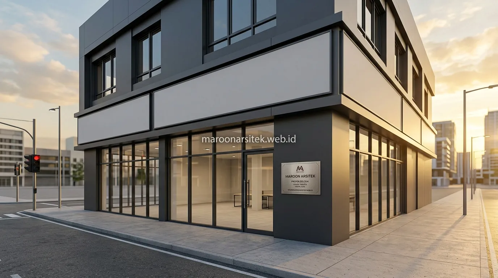

Banyak proyek ruko gagal memaksimalkan potensi komersialnya karena desain hanya berfokus pada jumlah lantai tanpa mempertimbangkan kebutuhan operasional bisnis yang akan menempati bangunan tersebut. Melalui layanan jasa kontraktor bangunan komersial dari Maroon Arsitek, seluruh perencanaan diarahkan untuk menghasilkan ruko modern yang fungsional, bernilai sewa tinggi, dan berdaya saing jangka panjang.
Perencanaan Tata Letak Parkiran sebagai Nilai Jual Utama
Perencanaan area parkir yang memadai menjadi salah satu faktor penentu daya jual ruko, karena ketersediaan parkir yang luas dan mudah diakses langsung memengaruhi kenyamanan pelanggan bisnis yang akan beroperasi di dalamnya. Aspek ini sering menjadi pertimbangan utama calon penyewa sebelum memutuskan menempati sebuah ruko komersial.
- Sirkulasi Kendaraan Teratur: Alur masuk dan keluar kendaraan dirancang tanpa crossing tajam agar tidak menimbulkan kemacetan di depan ruko saat jam sibuk.
- Kapasitas Memadai: Menyesuaikan jumlah slot parkir mobil dan motor dengan estimasi kepadatan pengunjung jenis usaha yang ditargetkan.
- Keamanan & Pencahayaan: Area parkir dilengkapi penerangan memadai dan akses ramp difabel menuju lobi ruko untuk standar komersial modern pada jasa konstruksi bangunan komersial.
Optimalisasi Lahan Terbatas untuk Kebutuhan Parkir Maksimal
Kebutuhan parkir yang luas pada lahan terbatas dapat dijawab melalui perencanaan tata letak yang efisien, seperti penempatan area parkir di bagian depan yang terintegrasi dengan akses jalan utama tanpa mengorbankan luas bangunan komersial.
Optimalisasi ini mempertimbangkan proporsi ideal antara luas bangunan dan area parkir, sehingga ruko tetap memiliki daya tampung bisnis yang memadai tanpa mengabaikan kebutuhan parkir yang menjadi nilai tambah signifikan.
Desain Fasad Komersial yang Menonjol di Lahan Strategis
Desain fasad ruko perlu dirancang agar menonjol dan mudah dikenali di lahan strategis dengan tingkat visibilitas tinggi, melalui penggunaan elemen visual yang menarik perhatian tanpa mengabaikan fungsi komersial bangunan secara keseluruhan. Fasad yang tepat berperan sebagai media promosi visual sebelum bisnis di dalamnya mulai beroperasi.
Pemilihan material fasad yang tahan lama dan mudah dikombinasikan dengan signage berbagai jenis bisnis menjadi pertimbangan penting, mengingat penyewa ruko dapat berganti dari waktu ke waktu dengan kebutuhan branding yang berbeda-beda.

Fleksibilitas Fasad untuk Berbagai Jenis Penyewa Bisnis
Kebutuhan fleksibilitas terhadap pergantian jenis bisnis penyewa dijawab melalui desain fasad netral dengan area signage yang jelas, sehingga mudah disesuaikan tanpa memerlukan renovasi besar setiap kali terjadi pergantian penyewa.
Pendekatan ini menjaga nilai investasi properti tetap stabil, karena fasad tidak perlu dirombak signifikan untuk mengakomodasi identitas visual bisnis yang berbeda dari penyewa sebelumnya.
Tata Ruang Interior Multifungsi untuk Berbagai Jenis Usaha
Tata ruang interior ruko dirancang secara multifungsi agar dapat mengakomodasi berbagai jenis usaha, mulai dari retail, kantor, hingga F&B, tanpa memerlukan perubahan struktur besar saat terjadi pergantian fungsi penggunaan. Fleksibilitas ini menjadi nilai tambah penting bagi investor yang mempertimbangkan potensi penyewaan jangka panjang.
Perencanaan posisi kolom struktur yang tidak menghalangi area display atau operasional utama menjadi pertimbangan teknis penting, mengingat setiap jenis usaha memiliki kebutuhan tata letak yang berbeda-beda dalam memanfaatkan ruang yang tersedia.
Sistem mekanikal elektrikal juga dirancang dengan kapasitas yang dapat menyesuaikan kebutuhan berbagai jenis usaha, termasuk kebutuhan daya listrik yang lebih besar untuk bisnis tertentu seperti F&B dibanding usaha retail pada umumnya bersama tim jasa desain arsitek kami.
Perencanaan Struktur yang Tidak Menghalangi Fungsi Ruang
Kebutuhan ruang bebas hambatan struktural dijawab melalui perencanaan posisi kolom dan dinding struktural yang mempertimbangkan kebutuhan tata letak berbagai jenis usaha sejak tahap desain awal, bukan hanya berdasarkan efisiensi struktur semata.
Perencanaan ini memastikan ruang interior tetap fleksibel digunakan berbagai jenis bisnis tanpa terhalang posisi kolom yang mengganggu alur operasional maupun tampilan area usaha yang disewa.